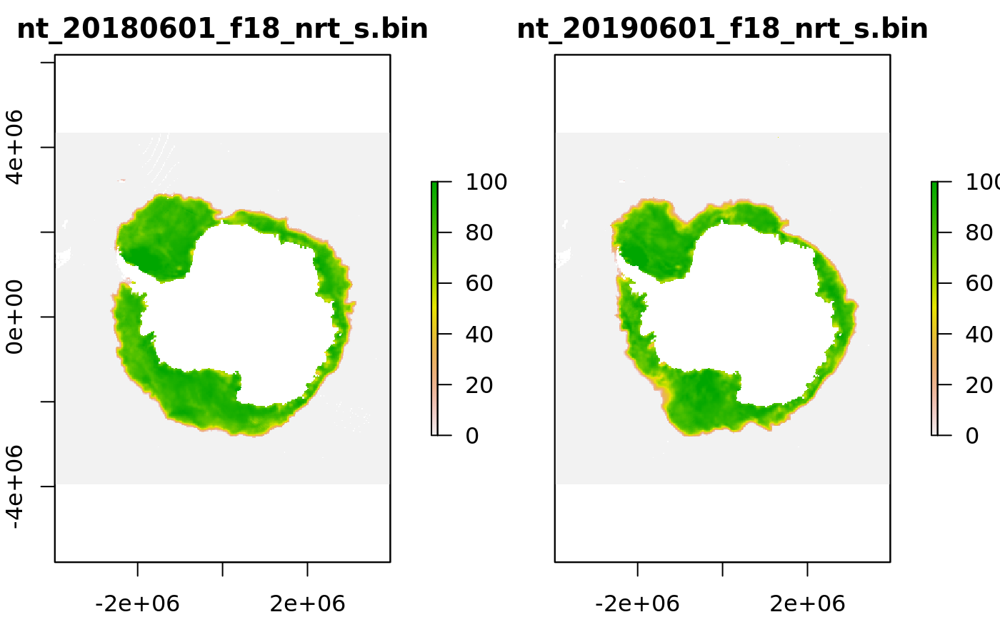

Tools for reading, plotting and manipulating spatial data used at the Australian Antarctic Division (AAD).
A common example is to read an environmental layer as a function of date:

The available data sources are accessed using read*() functions for a wide variety of data sources.
There are data sets from oceanography, topography, meteorology, altimetry, sea ice, ocean colour, and many other data sources. These are mostly remote sensing but include re-analysis and model output products.
The package uses the R raster package and always provides data as a standard raster (RasterLayer, RasterBrick, or RasterStack). Each data set is invdividually handled by a function to ensure the spatial and temporal registration is correct.
The contents of the data library itself is listed in the technical configuration.
If you would like a collection added please make a request via a Github issue or contact one of the authors directly.
There are two main ways to use it.
The typical use-cases for raadtools are
Examples of these workflows are outlined in this rOpenSci blog post.
The repository of data used by raadtools is available via the Nectar research cloud or for local use within the AAD.
There are two main ways to access raadtools. (If neither of 1 or 2 work for you you, see your local raadtools expert.)
If you have access to a “raadtools-RStudio-server” then you need only load the package to get started:
If it’s not installed, trying installing with
devtools::install_github("AustralianAntarcticDivision/raadtools")
library(raadtools)Typically you will be provided with access, and won’t be aware of the underlying details, but the repository of data used by raadtools is available under RDSI/PUBLIC/raad and at the AAD in the scientific data collection.
Anyone with a Nectar account may run this by creating a VM from our raadclient image. Search the public images for raadclient (e.g. ’ raadclient06_20181016’ but choose the latest one) and ensure that the SSH and RStudio port (8787) is open. Use the default rstudio/rstudio account, or create your own.
You are welcome to make your own copies of data from the collection for your own use, but please respect the citation and usage requests of the data providers listed in the summary.
Please note that the ‘raadtools’ project is released with a Contributor Code of Conduct. By contributing to this project, you agree to abide by its terms.